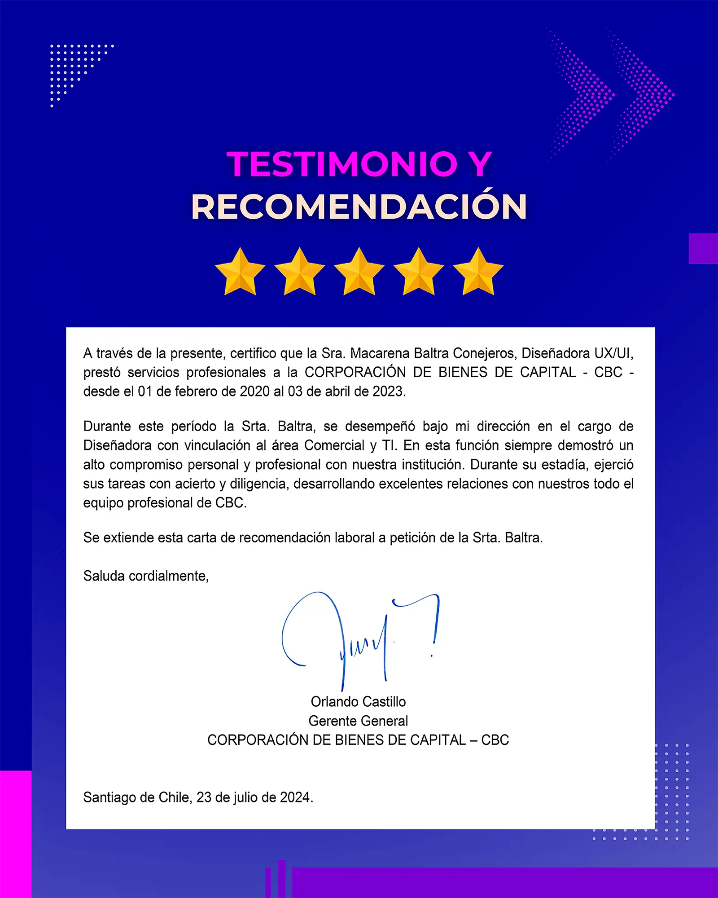

Detalles del proyecto
Herramientas utilizadas
Colaboradores/Stakeholders
Contexto
Cuando llegué a CBC, su web de los 90s: no era responsiva, carecía de jerarquía y bloqueaba SEO y otros procesos de marketing. Tampoco tenían manual de marca ni estándares de estilo.
Desafío
Actualizar un sitio obsoleto para que no solo mostrara sus servicios con claridad, sino que generara tráfico orgánico, potenciara leads y sirviera como base para nuevos productos digitales.
Empresa/Cliente: Corporación de Bienes de Capital
Proceso & Aprendizajes
Card Sorting: Sesiones con equipo para mapear contenido y prioridades.
Critical User Journey Map: Identifiqué flujos críticos de visitantes, desde el landing hasta el contacto.
Brainstorming & Benchmarking: Exploré tendencias web y diferencié CBC en su sector.
Prototipado Web: Creé en HTML5, CSS3 y Bootstrap 4 una nueva página web responsiva y testeada con stakeholders.
Design Thinking & Agile: Ciclos de feedback rápidos junto a TI y marketing para afinar diseño y asegurar SEO.
Resultados
+40 % tráfico orgánico: Tras optimizar estructura y SEO on-page.
Lead generation: Aumento de 25 % en formularios de contacto.
Responsividad: Adaptado a todos los dispositivos con coherencia visual.
Escalabilidad: Manual de estilos y prototipo “ready-to-code” para futuras fases.
Nota: Entregué guía de estilos, documentación de componentes y enlace al prototipo en Bitbucket para TI.
UX Architect & Prototyper Developer
En mi papel de UX Architect inicié con un diagnóstico: a través de card sorting y critical journey maps descubrí los bloqueos de la web antigua —estructura caótica, contenido oculto y falta de fluidez— que mantenían a CBC anclada en los 90. Con estos hallazgos definí una arquitectura de información clara, jerarquías lógicas y patrones de navegación coherentes.
Para trasladar estas pautas al entorno digital, desarrollé un MVP clicable en HTML5, CSS3 y Bootstrap 4, validado en ciclos rápidos con TI y Marketing. A partir de ese prototipo, iteramos junto a la documentación de componentes “ready‑to‑code” —una guía de estilos en PDF con tokens, componentes y fragmentos de CSS/Bootstrap listos para integrar directamente en el código—, lo que no solo eliminó fricciones de usabilidad, sino que también sentó las bases para incorporar IA y automatizaciones en futuras mejoras.
El resultado fue un giro radical: CBC dejó atrás su apariencia obsoleta, ganó +40 % de tráfico orgánico y un aumento del 25 % en leads, y se dotó de una base moderna lista para afrontar la competencia y escalar con nuevas tecnologías. Más que una vitrina renovada, este proyecto empoderó a la empresa para mostrarse con confianza, sin esconder sus procesos, y seguir creciendo en un mercado digital en constante evolución.
Testimonios & Referencias
-

Feb 2020 – Abr 2023 |Dependiente
Carta de Recomendación“Siempre demostró un alto compromiso personal y profesional con nuestra institución. Durante su estadía, ejerció sus tareas con acierto y diligencia, desarrollando excelentes relaciones con todo el equipo profesional de CBC."
Orlando Castillo
Gerente General en Corporación de Bienes de Capital (CBC)